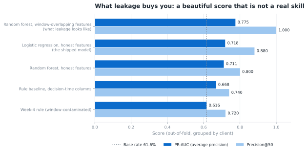

Search-Ranking Refresh Queue
Flagship Paper + code publicAn editorial team can review about 50 pages a week out of 18,000. The useful question is not "which pages are bad" but which pages should be opened first — an ordering problem, not a threshold one.
Why it matters
Review time is the constraint. Ordered by the model, roughly 44 of the first 50 pages opened are real decliners, against about 31 for an unordered list — the difference is a week of editorial work spent where it is needed.
Method
Defined the decision, the label and the decision point first · leakage audit that removed every window-spanning column · 24 decision-time features · a transparent rule baseline before any model · logistic regression and random forest · precision@K at the team's real capacity · client-clustered bootstrap, permutation test and calibration check · permutation importance.
Formulation
One 90-day snapshot split into three exact 30-day windows. The label is a >20% fall in impressions in the last window; every feature is knowable at the end of the second. Pages are ranked by predicted probability and scored where the team works — the top 50.
Experiment
30,000-row anonymised snapshot → 18,010 pages above a 100-impression floor, 30 clients. Rule, logistic regression and random forest scored out-of-fold under GroupKFold(5) by client, so no client is ever in both train and test; stability checked across five client holdouts; a deliberately leaky model kept as a control.
Result
Logistic regression on honest features: PR-AUC 0.718, precision@50 0.88 — against 0.668 / 0.74 for the rule baseline and 0.617 for random ordering, on a 0.62 base rate. The grouped split scored 0.042 lower than a naive random-row split — the split design, not the model, was doing the honest work. The leaky model reached a perfect 1.000 and was discarded. Then the result was attacked: a whole-pipeline permutation test puts chance at p = 0.005, and the model beats the rule inside 14 of 18 clients — while a client-clustered bootstrap shows the top-50 margin alone sits within noise, so it is reported as a point estimate, not a guarantee.
Limitation
One snapshot, not a time series: nothing tests whether the ranking holds across months. Thirty clients is a small sample — PR-AUC moves between 0.63 and 0.70 depending on which clients are held out. Search position and content freshness had to be dropped because they span the outcome window. No experiment, no control group: this cannot say that refreshing a page recovers its traffic.
My role
Started from FlyRank's internship starter repository — an anonymised dataset, a skeleton script and empty notebooks. The framing, the audit, the features, the models, the evaluation, the 18,010-row action queue and the paper are mine.

capstone_pipeline.py.
Python · scikit-learn · pandas · NumPy · Matplotlib